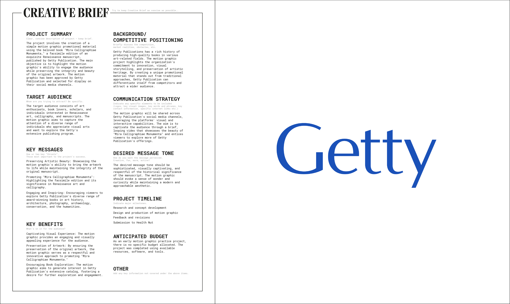

"Mira Calligraphiae Monumenta", a facsimile edition of an exquisite Renaissance manuscript, is one of our most beloved books.
— Getty Publications (@GettyPubs) April 29, 2022
Check out this super cool animation of one of the beautiful pages.
Art by Joris Hoefnagel. Animation by Donguk Kim.#IlluminatedManuscript pic.twitter.com/HpOR0AAIon